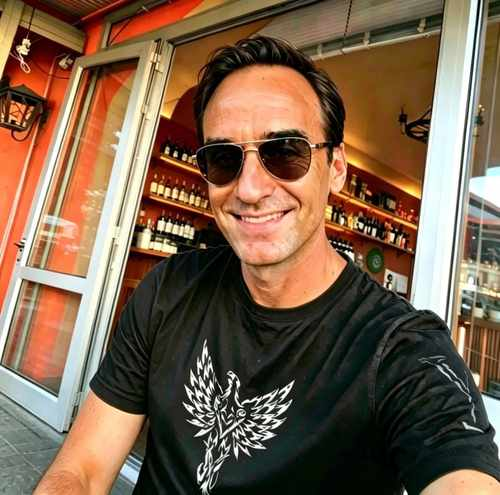
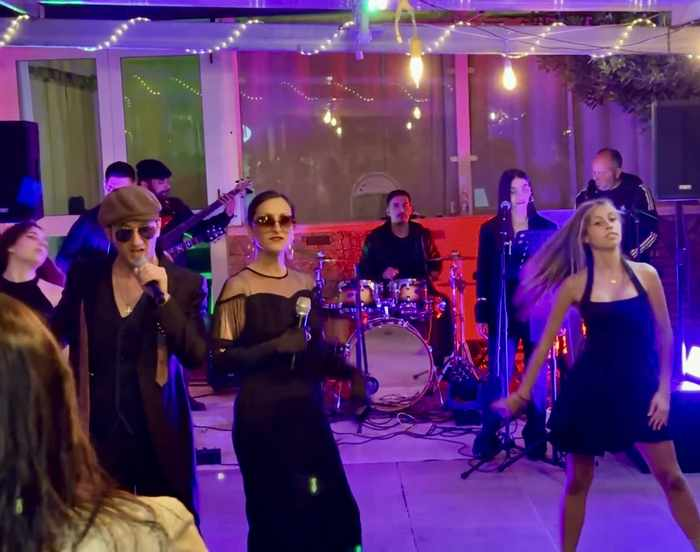
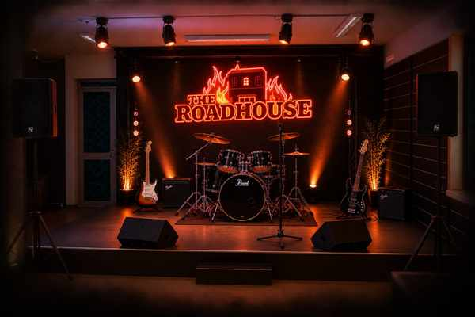

Pratola Serra · Avellino · Irpinia
Dove la strada finisce e la notte comincia

C'è chi apre un bar per lavoro. Enea ha scelto una strada diversa. Per anni commerciante di abbigliamento, un giorno ha deciso di mollare tutto — la sicurezza, la routine, il prevedibile — per inseguire la sua vera vocazione: le Harley-Davidson, la strada aperta, e il sogno di un bar che fosse il prolungamento naturale di quella passione.
Ha trasformato il suo negozio in un roadhouse su un'arteria storica dell'Irpinia, dove ogni sera è un raduno, ogni drink è una dichiarazione d'intenti, e il rombo dei motori è la colonna sonora di fondo.
Dietro il bancone o in sella alla sua moto, Enea è l'anima di questo posto. E Pratola Serra non è mai stata la stessa da quando ha acceso le luci del Roadhouse.
Questo antico detto dialettale irpino suona come un augurio — ma era una maledizione. La via principale di Pratola Serra era il passaggio obbligato per raggiungere il Carcere Borbonico di Montefusco, una delle prigioni più dure del Regno delle Due Sicilie. Augurare a qualcuno di "passare per Pratola" equivaleva ad augurargli la prigionia.
Oggi il detto è diventato il nome di un festival — "Puozzi Passà p'a Pratala", la rassegna di musica popolare che ogni secondo weekend di luglio trasforma il corso del paese in un palcoscenico a cielo aperto.
E chi passa per Pratola oggi lo fa per scelta: fermatevi al Roadhouse e capirete perché.
Il nome Pratola deriva dal latino pratulum (praticello) — e Serra da serra, collina. Le origini risalgono all'Età del Bronzo: nell'area archeologica di Pioppi sono emersi reperti preistorici, un sito termale romano del II sec. d.C., e un misterioso Dolmen di blocchi calcarei alto 5 metri, centro rituale delle comunità che abitavano queste terre.
Già secoli prima di Cristo, nei campi si celebravano le Prataliae — feste osche di marzo e aprile che legavano la comunità alla terra. Duemila anni dopo, quello spirito è ancora vivo: dalla Calata degli Angeli a Pasqua al Festival "Puozzi Passà p'a Pratala" di luglio.
Pratola Serra è anche terra di Fiano di Avellino DOCG e "Città del Vino". The Roadhouse nasce da questa energia millenaria, unendo tradizione irpina e spirito biker.
Per i turisti: fermatevi qui. Scoprite 5.000 anni di storia in un cocktail, vivete una serata autentica nel cuore verde della Campania.
A Pioppi, un dolmen di 5 metri testimonia riti dell'Età del Bronzo. Le feste osche dette Prataliae danno il nome al territorio.
Un sito termale romano emerge a Pioppi. Pratola diventa crocevia lungo le rotte che collegano Napoli all'Adriatico.
Serra di Pratola si sviluppa su un colle attorno al castello medievale. Chiese, torri campanarie e cultura agricola definiscono il territorio.
La via principale di Pratola diventa il passaggio verso il temuto Carcere Borbonico. Nasce il detto-maledizione: "Puozzi passà p'a Pratala!"
Il sisma dell'Irpinia segna il territorio. Ma la comunità si ricostruisce, più forte e più unita.
Enea molla il commercio di abbigliamento, segue la sua passione per le Harley-Davidson e apre il Roadhouse — un bar on the road su un'arteria storica.
Il giovedì sera il Roadhouse si trasforma. Artisti locali e cantautori irpini salgono sul palco per sessioni acustiche intime — chitarra, voce, e l'energia di un pubblico che sa ascoltare.
Il venerdì e il sabato la temperatura sale: DJ set che spaziano dal funk al deep house, dalla disco italiana ai classici rock. La terrazza diventa dancefloor, i drink scorrono, e la notte di Pratola Serra prende fuoco.
La domenica è dedicata all'aperitivo lungo con selezione vinili, tramonto sulle colline irpine, e il ritmo lento di chi sa godersi il momento.


The Roadhouse Bar nasce dalla passione per le due ruote. Le curve dell'Ofantina, i tornanti dell'Irpinia, il rombo dei motori al tramonto con le montagne che si colorano d'arancio — tutto questo è nel DNA del Roadhouse.
Qui i bikers trovano casa: parcheggio dedicato, una parete di memorabilia MotoGP e Red Bull Racing, e una community che parla la stessa lingua — quella della libertà su strada.
Ma non serve una moto per sentirsi parte della famiglia. Lo spirito biker è un'attitudine: vivere il momento, rispettare la strada, godersi la compagnia.
Lampadine vintage e luci ambient sotto le stelle irpine.
Acustica il giovedì, DJ ospiti venerdì e sabato.
Ulivi, gelsomino e aromatiche — il profumo dell'Irpinia.
Parcheggio moto, memorabilia MotoGP e Red Bull Racing.
Pratola Serra (AV)
Campania, Italia
Nel cuore verde dell'Irpinia
Lun – Gio: 18:00 – 01:00
Ven – Sab: 18:00 – 03:00
Dom: 17:00 – 00:00
Instagram: @theroadhousebar
Facebook: The Roadhouse Bar
Niente prenotazioni.
Entri e sei a casa.
© 2026 The Roadhouse Bar · Pratola Serra (AV) · Tutti i diritti riservati
Fondato da Enea — Il Duro del Roadhouse